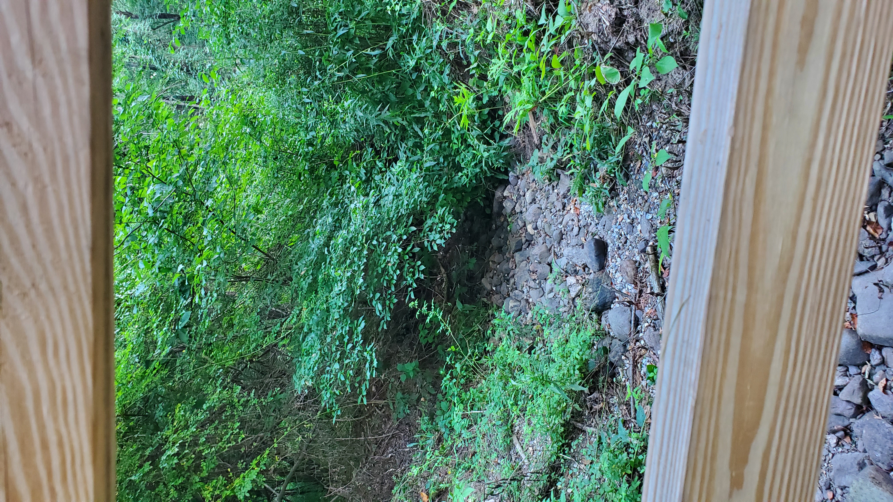

5 Field & Stream Trip
Date: 8/19/2020
Learning Objectives
After completing this tutorial you should
- be able to define citizen’s science.
- be able to install the crowdwater app on your smart phone.
- understand how to update virtual gauge, soil moisture, and temporary stream spots through the app & website
- have signed up for four “asynchronous field trips”
5.1 Citizen Science & the Crowdwater App
5.1.1 Introduction
Crowdwater is a Citizen Science project out of the University of Zurich to collect supplemental data to enable improved modeling of floods and droughts.
► Question 5.1
What is Citizen’s Science?
► Solution
Crowdwater uses a geocaching-type approach where “spots” (measuring stations) can be found using a smart phone app and navigated to using the built-in maps, any user can add additional observations. The generated data can be used to update hydrological models predicting streamflow which have important roles for flood/drought prediction and water management decisions.
5.1.2 Crodwater App
Download the App
Search for and download the app in the Google Play or Apple App store.
Register an Account & Log in
Open the app and register a SPOTTERON account using an email address. You will choose a username and password. If you get logged out, you need to log in using the email address & password.
App overview
When you open the app it should show you your current location and you will be able to view spots (and stacks of spots) near your location. Top right will show an icon for your user profiles and new notifications. The ribbon on the bottoms has buttons to filter, find the newest entries, stats, and the menu (blue). The black + symbol is for adding new spots.
Figure 5.1: Crowdwater app start screen

You can access all the same functions plus some additional ones from the menu.
Figure 5.2: Crowdwater app menu

Check out a spot
If you select a spot you will get detailed information on the type of spot, when it was created, updates, and any comments.
Figure 5.3: Detailed information on virtual gauge spot
Spot types
There are six types of spots, Virtual Staff Gauges and Physical Staff Gauges are used to measure changes in the water level. Stream Type can be used to give additional information on stream or river being monitored. Temporary Stream and Soil moisture can be used to monitor changes in the appearance (and disappearance) of temporary streams and changes in soil moisture - both are indicative of drought and flood conditions. Finally Plastic Pollution spots can be used to monitor the amount and type of pollution encountered in streams.
Figure 5.4: Detailed information on virtual gauge spot

We will be monitoring two sites and making three types of measurements: observed changes in water level using Virtual Staff Gauges and changes in drought/flood conditions by monitoring changes in Temporary Streams and Soil moisture.
Virtual Staff Gauge
When a new Virtual Staff Gauge is created a staff gauge is superimposed on a picture of your measuring spot, aligned with the water level, and the size adjusted so the water classes can be used to record changes in the water level.
Figure 5.5: Detailed information on virtual gauge spot
All new measurements are relative to the initially recorded water level, i.e. you compare an update to the original and determine where the water level is now relative to the original water level and record that water class as +/- . This is frequently easier to do via the webpage compare to the app.
Temporary Stream
A temporary stream is a stream that experiences extreme shifts in water level throughout the year and will run dry during certain times even under normal conditions.
Figure 5.6: Example of a temporary stream spot.
A temporary stream spot will have a picture of the temporary stream (which might not be visible depending on when it was taken), e.g. arrows might be used to indicate where the stream should be.
Figure 5.7: Different categories of observation for temporary stream.

For each new measurement indicate which of the six categories you observe:
- DRY STREAMBED: no visible water, streambed is dry
- WET STREAMBED: no visible water, streambed is wet at least 2 cm depth below the surface
- ISOLATED POOLS: separated pools of water, no visible flow in the streambed
- STANDING WATER: water but no visible flow
- TRICKLING WATER: clearly visibly flowing water, but little flow
- FLOWING WATER: continuously flowing water
Soil moisture
Soil moisture can be an important indicator of drought and flood conditions.
Figure 5.8: Example of a soil moisture spot.

A soil moisture spot will consist of a picture of the location to make the observation, the measurement spot should be marked by an arrow or an oval around the area.
Figure 5.9: Different categories of observation for soil moisture.
For each new measurement indicate which of the eight categories you observe1 You don’t actually have to place your backpack on the ground … picture it in your mind as a reference!:
- DRY: If you left your backpack on the ground, it would still be dry after a long time.
- GRADUALLY DAMP: If you left your backpack on the ground, after some time the bottom of your backpack would be damp.
- GRADUALLY WET: If you left your backpack on the ground, after some time it would start get wet (items in the backpack would get damp).
- IMMEDIATELY WET: If you left your backpack on the ground, your backpack and contents would immediately get wet.
- MUDDY: If you were to step on the ground, there would be a squeaky, squishy sound - if you were running and came to a sudden stop, you’d have a wet butt.
- WELLING: If you were to step on the ground, water would come out of the ground next to your shoe (yes, if you stomped on the ground, you might get somebody else wet).
- SUBMERGED: It’s basically a puddle.
- RAIN/SNOW: If the spot is covered in snow or it is currently raining you cannot make an accurate measurement - but still take a picture and update the spot.
Update a Spot
To add a new measurement to an existing spot, use the app and the integrated maps to locate that spot, now tap the spot icon to open that spot (see Figures 5.5, 5.6, 5.8). Next, either tap on the blue + sign on the map next to the spot, or in the information section about the spot, tap the three vertical dots and select update spot.
Figure 5.10: Navigate to spot to update measurement.

This will open a NEW MEASUREMENT interface that will allow you to take a new picture (or use an existing picture), for a virtual staff gauge you will need to compare the current water level to the original water level to determine the relative change in water classes, for temporary streams and soil moisture identify the original measurement location using the the original image and then add your observation.
Figure 5.11: Add new observation.

Make sure you tap save so your observation is registered.
5.1.3 Website
The Crowdwater website has additional background information and resources regarding the entire project.
You can use the Data section of the website both to explore current spots around the world2 this is also where we would download data for analysis and you can use it to add and update spots as well. For virtual staff gauge spots it can be helpful to take pictures in the field and the upload them to your computer to update spots because it will allow you to compare an image on your phone to the computer screen to determine the change in water level. It is also easier to backdate images etc. from the website interface.
5.2 Go Forth!
Now that you are familiar with the app, spot, and measurement types it’s time to make some observations. You will be making these observations on your own time with a field buddy and uploading your observations via the app or the website - because you can take images and upload them later we can always do that together. At the end of the semester we will use this data for a lab comparing the two sites by analyzing changes in conditions over the course of the semester3 future Conservation Biology courses will use your data for temporal comparisons as well!, comparing ecosystem functions & services, and thinking about why modeling (forecasting) hydrological forecasting can be important for conservation.
5.2.1 Sign-up for field-ish trips
You will need the observations you make in the field both through the app and in general for the lab at the end of the semester so be sure to take these field trips seriously, take notes if needed. These outings are considered part of your lab participation grade
Find a field buddy (at least one of your should have a car) and sign up for two trips per site on the two google spreadsheets (links will be in our slack channel for easy access). We are trying to make weekly(ish) measurements, but you are free to visit during a time that is convenient for you and your schedule (try to find a buddy with a similar schedule). We will have everyone sign off their measurements as completed with a time/date so you will be able to see when the last measurement was made. Ideally, if the person before you went on a Sunday, don’t go Monday even if it is “the next week”.
Site 1 (Piscataquog River Park) is closer (approx. 5 minute drive) and only has three measurement points (budget for 30 minutes to complete, Site 2 (Pulpit Rock Conservation Area) is about a 15 minute drive and involves hiking in about 30 - 45 minutes depending on your walking speed and you need to hike back out to the trail head, though coming back should be quicker since you won’t have to stop to make observations. Theoretically, you could take an afternoon and hit both sites but then you would want to budget 3 - 4 hours to make sure you have plenty of time. Ideally, you should visit each sites both early in the semester and in the back half; you should discuss with your partner whether you want to pack your weeks (i.e. sign up for two weeks in which you commit to going to both locations) or spread them out (i.e. sign up for a different week for each site/visit).
5.2.2 Going in the field
Safety is our top priority. Always go with a buddy, be mindful of your surroundings, and keep an eye out for each other4 I expect you to be mindful of social distancing protocols - if you can find a field buddy that you already have high interaction that would be great even though time in the field is a great time to get to know a new person!; our second site is more remote and you might loose cell service out there. Wear appropriate clothes and footwear (let’s not have any rolled ankles!), especially for Site 2 the trails will likely be more muddy later in the semester. Use bug spray. Have fun.
Checklist:
- weather appropriate clothes & shoes.
- bug spray.
- app downloaded/cell phone charged.
- water, snacks.
Safety is our top priority, if conditions do not seem safe (heavy rain, lightning …) during your week please contact me immediately so we can figure out our best options. Do not go hiking on your own, if your field buddy needs to drop out for some reason again, contact me we will figure something out (am I always looking for an excuse for some fresh air? Probably.)
5.2.3 Site 1: Piscataquog River Park
We have three measurement spots at Site 1, water level measurements above and below the dam and a temporary stream.
Figure 5.12: Virtual Staff Gauge spot above Kelly Dam.
Access point 1: You can park at the Piscatagquia Boat Ramp which is where the one of the virtual staff gauge spots is located.
Figure 5.13: Virtual Staff Gauge location above Kelly Dam.

From there you can connect with the River Trail walk towards the Ice Arena and then get on the trail that will take you to the foot trail which you will take you to the temporary stream and second virtual staff gauge located right before the foot bridge.
Figure 5.14: Temporary Stream and Virtual Staff Gauge locations below Kelly Dam.

Figure 5.15: Temporary Stream and Virtual Staff Gauge locations below Kelly Dam.

Then you would walk back out and to your car.
Access point 2: You can park at the Ice Arena, access the trail taking you to the two spots by the foot bridge, walk back and either take the River Trail to the boat launch/virtual staff gauge spot or you could hop in your car and drive there.
5.2.4 Site 2: Pulpit Rock Conservation Area
Park your vehicle at the Pulpit Road Trail-head Parking lot.
Access the trail, initially you’ll be following the yellow path (look for markers on the trees). You will likely use cell phone reception during the hike you can download maps offline if you’d like.
Figure 5.16: Follow the yellow trail…
You’ll quickly come upon your first fork in the road - hang right.
Figure 5.17: Right at the pink sign.
You’ll hit another fork, stick to the right hand trail.
Figure 5.18: Get on the white trail.
You are now and for the rest of your hike following the white trail which will either be paint markings or little plaques on trees.
Figure 5.19: Get on the white trail.

At this point you can’t really get lost you just have to make sure that you take pictures at all the spots. They should be easy to spot, most of them are next to/under bridges/boardwalks.
Your first spot is a temporary stream crossing this bridge.
Figure 5.20: Bridge over temporary stream.
Take a picture of the stream and note the status.
Figure 5.21: Bridge over temporary stream.
Your next measurement will be the soil moisture at this boardwalk.
Figure 5.22: Bridge over temporary stream.

Take a picture and note the status.
You will come across the turn-off onto the yellow trail (Martin’s trail) - do not deviate from your mission! Stay on the white path.
Figure 5.23: Bridge over temporary stream.

Next spot: Temporary stream:
Figure 5.24: Bridge over temporary stream.

Take a picture and note the status.
Almost there … your penultimate spot is a soil moisture measurement.
Figure 5.25: Bridge over temporary stream.

Take a picture and note the status.
Keep going, you are basically at the last footbridge and final soil moisture measurement. For the direction you are coming in it will probably look more like this:
Figure 5.26: Bridge over temporary stream.

The original image of the spot was taken returning down the trail and will look like this.
Figure 5.27: Bridge over temporary stream.

That is the last spot, if you go a tiny bit farther you will see the turn-off to the Ravine Trail. There is a nice view and info board at the top of the gorge.
Figure 5.28: Bridge over temporary stream.
The fastest and safest way back is the way you came, follow the white trail and connect with the yellow trail back to your car.
The Ravine Trail takes you down into the gorge which during certain times of the year and depending on rain fall will be muddy and slippery, some of the signage is also not easy to spot/follow and it’s easy to get a bit lost. There also are other options to loop back. Remember, safety is our top priority.
Page built: 2020-08-18